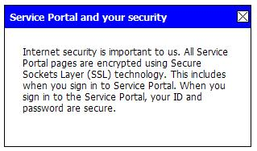
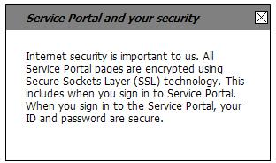

This package contains JSP tag classes and tag documentation for
internationalizing Shared Portal Framework portlet applications.
Note: SPF portlet developers should never need to use the
Java classes in this package directly. Use the respective JSP tags
instead. For your reference, the tag classes and their respective JSP
tags are listed below:
- {@link com.hp.it.spf.xa.i18n.portlet.tag.MessageTag} - Tag
class for
<spf-i18n-portlet:message>
- {@link com.hp.it.spf.xa.i18n.portlet.tag.ParamTag} - Tag class
for
<spf-i18n-portlet:param>
- {@link
com.hp.it.spf.xa.i18n.portlet.tag.ClassicContextualHelpParamTag} - Tag
class for
<spf-i18n-portlet:classicContextualHelpParam>
- {@link com.hp.it.spf.xa.i18n.portlet.tag.LocalizedFileURLTag}
- Tag class for
<spf-i18n-portlet:localizedFileURL>
spf-i18n-portlet.tld
The TLD file is spf-i18n-portlet.tld and it is
contained inside the SPF portlet utilities JAR, in the META-INF/
folder. Its URI is /spf-i18n-portlet.tld so that is the URI
you should refer to it with, in your portlet application JSP's. Although
you can use whatever JSP tag prefix you like, the documentation here
will use the prefix spf-i18n-portlet.
<spf-i18n-portlet:message>
Usage:
<%@ taglib prefix="spf-i18n-portlet" uri="/spf-i18n-portlet.tld" %>
...
<spf-i18n-portlet:message
key="message-key"
defaultValue="default-value"
escape="true-or-false"
/>
This tag expresses the message for the given key from a portlet
resource bundle, localized to best-fit the user's locale.
All of the message resources configured in your portlet's Spring
application context (both your main applicationContext.xml
and your portlet-specific one, if any) are searched for the given message-key.
These message resources include internal message property files (ie,
those found by the classloader inside your portlet WAR) and external
ones (ie, those found by the classloader in your portlet resource
bundle folder). We recommend you define your message resources using the
Spring {@link
org.springframework.context.support.ReloadableResourceBundleMessageSource}
class, for hot deployment of message changes (especially for external
files, for which the portlet application does not need to be rebuilt and
restarted if there is a change in the messages). The message property
files themselves should (except for the base file) be tagged by locale
according to the Java-standard for {@link java.util.ResourceBundle}, and
the folder where they are located (or a parent folder thereof) should be
configured in the JVM classpath so the classloader can find them.
Note: For more about where you put your message resources,
how you localize them, and how you configure them in Spring, see the
discussion in the SPF
Portlet Utilities Developer's Guide.
Here are the tag attributes:
key="message-key"-
The key attribute is used to specify the message to
retrieve. It is required.
defaultValue="default-value"-
The defaultValue attribute is used to specify a
default value to express, in case the given message key is not found.
This is an optional attribute; the message key itself is expressed if
no explicit (ie non-null and non-blank) defaultValue
attribute is provided.
escape="true-or-false"-
The escape attribute is used as a switch to control
the HTML-escaping policy for the returned message. By default, the
expressed message string does not escape any HTML special characters it
may contain, such as <. This lets you put HTML markup
in your messages and have it render as such in the browser. If you need
the HTML special characters to be converted into their corresponding
character entities, so that they display literally in the browser
instead, use the escape="true" attribute on the tag.
Note that <spf-i18n-portlet:message> may also
contain the following SPF tags:
<spf-i18n-portlet:param>-
If your message value includes general string parameters as per
the Java standard for {@link MessageFormat}, use the <spf-i18n-portlet:param>
tag inside the <spf-i18n-portlet:message> tag body,
in order, for each such parameter. See the <spf-i18n-portlet:param>
tag documentation below.
<spf-i18n-portlet:classicContextualHelpParam>-
If your message value includes the special markup for
contextual-help injection (<contextual_help>...</contextual_help>),
use the <spf-i18n-portlet:classicContextualHelpParam>
tag inside the <spf-i18n-portlet:message> tag body,
in order, for each such markup pair. See the <spf-i18n-portlet:classicContextualHelpParam>
tag documentation below.
<spf-i18n-portlet:param>
Usage:
<%@ taglib prefix="spf-i18n-portlet" uri="/spf-i18n-portlet.tld" %>
...
<spf-i18n-portlet:param value="string" />
You use this tag inside the <spf-i18n-portlet:message>
tag body, to pass a string parameter into any {@link MessageFormat}
placeholders in the message value. For example, if your message is like
this:
key=Your name is {0} and your age is {1}.
Then use the following in your JSP (where name
contains the user name, and age contains the age):
<%@ taglib prefix="spf-i18n-portlet" uri="/spf-i18n-portlet.tld" %>
...
<spf-i18n-portlet:message key="key">
<spf-i18n-portlet:param value="<%= name %>" />
<spf-i18n-portlet:param value="<%= age %>" />
</spf-i18n-portlet:message>
Here are the tag attributes:
value="string"-
The string to substitute for this position in the message.
A single message may contain multiple {@link MessageFormat}
parameter placeholders, labeled {0}, {1}, etc
as shown in the above example. You just provide one <spf-i18n-portlet:param>
tag for each one, in order. Any extra tags you provide go unused.
Conversely, any placeholders in the message, for which you did not
provide a <spf-i18n-portlet:param>, remain.
<spf-i18n-portlet:classicContextualHelpParam>
Usage:
<%@ taglib prefix="spf-i18n-portlet" uri="/spf-i18n-portlet.tld" %>
...
<spf-i18n-portlet:classicContextualHelpParam
title="help-title"
titleKey="help-title-message-key"
content="help-content"
contentKey="help-content-message-key"
noScriptHref="uri"
width="pixels"
borderStyle="inline-style'
borderClass="css-classname"
titleStyle="inline-style"
titleClass="css-classname"
contentStyle="inline-style"
contentClass="css-classname"
/>
You use this tag inside the <spf-i18n-portlet:message>
tag body, to inject the "classic" rendition of contextual help into the
message value. (If you don't know what is meant by "contextual help" or
the "classic" rendition, see the discussion in the SPF
Portlet Utilities Developer's Guide.)
For example, let's say you need to produce a UI message like this
(where the word "secure" links to some classic contextual help not shown
yet):
Using contextual help injection, you can have the following in
your message properties:
key=Your sign-in is <contextual_help>secure</contextual_help>
key.help.title=Service Portal and your security
key.help.content=Internet security is important to us...
Then use the following in your JSP to express this message with
the appropriate contextual help markup (text, HTML, CSS and JavaScript)
injected into it. Note: this demonstration expresses the contextual help
using the built-in "default" style; see the discussion on tag attributes
for how to override that and provide your own style.
<%@ taglib prefix="spf-i18n-portlet" uri="/spf-i18n-portlet.tld" %>
...
<spf-i18n-portlet:message key="key">
<spf-i18n-portlet:classicContextualHelpParam titleKey="key.help.title" contentKey="key.help.content" />
</spf-i18n-portlet:message>
So then, when the user clicked on the "secure" hyperlink, it
would look like this:

Here are the tag attributes:
title="help-title"
titleKey="help-title-message-key"-
Use one of these attributes to provide the title for the
contextual help (it is an error if you do not use one of these with a
non-null, non-blank value; if you use both, the title
attribute takes precedence). The title attribute provides
the literal string to use for the title (so it is your responsibility
to have already generated that string, localized as needed). The titleKey
is a message key for the title - the tag looks inside your configured
message resources to retrieve the title (using the key itself as the
default, if the message is not found). The message lookup proceeds as
described above.
content="help-content"
titleKey="help-content-message-key"-
Use one of these attributes to provide the title for the
contextual help (it is an error if you do not use one of these with a
non-null, non-blank value; if you use both, the content
attribute takes precedence). The content attribute
provides the literal string to use for the main help content (so it is
your responsibility to have already generated that string, localized as
needed). The contentKey is a message key for that - the
tag looks inside your configured message resources to retrieve the main
help content (using the key itself as the default, if the message is
not found). The message lookup proceeds as described above.
noScriptHref="uri"-
The noScriptHref attribute gives an alternative URL
to offer the browser to use in case JavaScript is disabled. For a
script-enabled browser, this attribute has no effect.
Because the classic rendition of contextual help requires
JavaScript, it will not work if JavaScript is not enabled in the
browser. So by default, the classic rendition of contextual help
includes a no-script URL pointing to your portlet's help mode (if your
portlet supports help mode - if not, then there is no no-script URL
provided by default). But you can specify any other URL to be used in
the no-script case instead, via this attribute. If your portlet
supports help mode, you can even set this attribute to a document
fragment like noScriptHref="#go_here" so that, in the
no-script case, the user will be taken to that fragment of the document
displayed by your portlet's help mode.
width="pixels"-
The classic rendition of contextual help is a DHTML popup table
with a 300-pixel width by default. You can override that width with
this attribute.
borderStyle="inline-style"
borderClass="css-classname"-
The classic rendition of contextual help is a DHTML popup table
with a thin solid black border by default. You can use either of these
attributes to style the border differently.
The borderStyle attribute works like the style
attribute of most HTML tags - it lets you provide a set of CSS
properties inline with your tag. The borderClass attribute
works like the class attribute of most HTML tags - it lets
you refer to a CSS class defined elsewhere in your JSP or in an
included CSS sheet. Typically you would use only one or the other,
though the tag will let you provide both. If you do use both, then CSS
properties defined in borderStyle override the same
properties defined in the borderClass class, as usual with
CSS. Similarly, CSS properties defined in either override any defined
elsewhere on the page for tables.
The CSS properties you can define are the ones which are
relevant to table borders (ie CSS properties for the HTML <TABLE>
tag). For example, here is what the classic contextual help popup looks
like with borderStyle="border-color:blue;border-width:3px;border-style:solid":

You can set borderStyle="" to cancel the default
border style.
titleStyle="inline-style"
titleClass="css-classname"-
The classic rendition of contextual help is a DHTML popup table
where the top row contains the title for the contextual help. By
default, that title is displayed using bold white font on a blue
background. You can use either of these attributes to style the title
differently.
The titleStyle attribute works like the style
attribute of most HTML tags - it lets you provide a set of CSS
properties inline with your tag. The titleClass attribute
works like the class attribute of most HTML tags - it lets
you refer to a CSS class defined elsewhere in your JSP or in an
included CSS sheet. Typically you would use only one or the other,
though the tag will let you provide both. If you do use both, then CSS
properties defined in titleStyle override the same
properties defined in the titleClass class, as usual with
CSS. Similarly, CSS properties defined in either override any defined
elsewhere on the page for tables.
The CSS properties you can define are the ones which are
relevant to table cells (ie CSS properties for the HTML <TD>
tag). For example, here is what the classic contextual help popup looks
like with titleStyle="background-color:gray;font-style:italic;color:black;font-weight:bold":

You can set titleStyle="" to cancel the default
title style.
contentStyle="inline-style"
contentClass="css-classname"-
The classic rendition of contextual help is a DHTML popup table
where the second row contains the main content for the contextual help.
By default, that content is displayed using normal black font on a
white background. You can use either of these attributes to style the
main help content differently.
The contentStyle attribute works like the style
attribute of most HTML tags - it lets you provide a set of CSS
properties inline with your tag. The contentClass
attribute works like the class attribute of most HTML tags
- it lets you refer to a CSS class defined elsewhere in your JSP or in
an included CSS sheet. Typically you would use only one or the other,
though the tag will let you provide both. If you do use both, then CSS
properties defined in contentStyle override the same
properties defined in the contentClass class, as usual
with CSS. Similarly, CSS properties defined in either override any
defined elsewhere on the page for tables.
The CSS properties you can define are the ones which are
relevant to table cells (ie CSS properties for the HTML <TD>
tag). See the above example (for styling the title) for the general
idea. You can set contentStyle="" to cancel the default
style.
A single message may contain multiple occurrences of <contextual_help>...</contextual_help>
markup. You just provide one <spf-i18n-portlet:classicContextualHelpParam>
tag for each one, in order. Any extra tags you provide go unused.
Conversely, any <contextual_help>...</contextual_help>
markup in the message, for which you did not provide a <spf-i18n-portlet:classicContextualHelpParam>,
is removed (leaving the contents behind).
Injecting contextual help into a message is useful because it
lets you embed contextual help in the middle of a message (ie in the
middle of a phrase or sentence), without having to break the message
apart and risk making it untranslatable. Note that if you do have
contextual help to wrap around a whole message (or around some other
element, like an image), then you may be more interested in using the
standalone contextual help approach, instead of contextual help
injection. For example, <spf-help-portlet:classicContextualHelp>
is an SPF JSP tag for expressing standalone contextual help in the
"classic" manner. See the documentation for <spf-help-portlet:classicContextualHelp>.
Note: The classic rendition of contextual help utilizes an
"X" image on which the user can click to close the window. This is a GIF
image which you must supply (either inside your portlet application, or
in the external resource bundle folder). You can localize the image if
desired. Name the base file for the image btn_close.gif and
put it in the images/ subfolder (of your portlet WAR or the
external folder). Management of this image is the same as for any other
supporting resource file.
The SPF portlet utilities JAR contains a sample btn_close.gif.
(It is the same one shown in the examples above.)
<spf-i18n-portlet:localizedFileURL>
Usage:
<%@ taglib prefix="spf-i18n-portlet" uri="/spf-i18n-portlet.tld" %>
...
<spf-i18n-portlet:localizedFileURL
file="base-file"
fileKey="localized-file-message-key"
/>
You use this tag to express a URL for a supporting static
resource file (image, HTML, PDF, etc), where the URL is automatically
adjusted to point to the best-fit localized version of that resource.
The resulting URL is properly encoded and ready to present to the user's
browser, such as in the SRC attribute of an HTML <IMG>
tag.
The resource file may be an external resource (ie, found in your
portlet resource bundle folder) or an internal resource (ie,
found inside your portlet application WAR). The files may be any static
resource, such as an image, video, PDF, etc. All the localized files in
the bundle should share the same base filename, and should (except for
the base file itself) be tagged by locale according to the Java-standard
for {@link java.util.ResourceBundle}. If you use external resourcing
(ie, put them in the portlet resource bundle folder) then:
- The location of the portlet bundle folder must be configured
in
i18n_portlet_config.properties and
- The file-relay servlet must be deployed in your portlet WAR or
in some other location accessible to the browser and configured in
i18n_portlet_config.properties
Note: For more about where you put your supporting
resource files, how you localize them, and how you configure i18n_portlet_config.properties
and/or the file relay servlet, see the discussion in the SPF
Portlet Utilities Developer's Guide.
For example, say you have a bundle of picture.jpg
files (including the base file, picture.jpg, and some
localized copies of it: picture_es_MX.jpg, picture_zh_CN.jpg,
etc). Imagine you have put them into the images/ subfolder
(of either your portlet WAR or the external portlet resource bundle
directory). Then to display that image in the browser, use the following
in your JSP:
<%@ taglib prefix="spf-i18n-portlet" uri="/spf-i18n-portlet.tld" %>
...
<img src='<spf-i18n-portlet:localizedFileURL file="/images/picture.jpg" />'>
-
If you put the bundle of files in the portlet resource bundle
folder (actually in the images/ subfolder thereof), then
the best-fitting candidate for the user's locale would be resolved from
there. A file-relay servlet URL pointing to it (and properly
portlet-encoded for WSRP and the portal) would be expressed. Assuming
you have configured and deployed the file-relay servlet properly (see
the discussion on the relay servlet, in the SPF
Portlet Utilities Developer's Guide), the image would be fetched by the
browser from the servlet, and displayed in the browser.
-
If you put the bundle of files inside your portlet WAR (actually
in its images/ subfolder), then the best-fitting candidate
for the user's locale would be resolved from there. A portlet static
resource URL (properly portlet-encoded for WSRP and the portal) would
be expressed. The image would be fetched by the browser from the
portlet WAR, and displayed in the browser.
Here are the tag attributes:
file="base-file"
fileKey="localized-file-message-key"-
Use one of these attributes to identity the file for which to
build the URL. The file attribute gives the base filename
to look for (including any subfolder relative to where you put the
bundle: ie, relative to the portlet resource bundle folder if
you set the bundle up outside your WAR, or relative to the root of the
portlet application if you included the bundle inside the WAR. When you
give the file attribute, the tag will search the portlet
bundle folder first, and inside your WAR second. If no bundle for that
base file is found, then a URL pointing to the base file inside your
portlet WAR will be built and returned anyway. (This will generate a
404 error when opened by the browser, so that during testing, any
missing resources will be obvious.)
The fileKey attribute works differently: with that
attribute, you give the key for a message property whose value is the
actual localized file name. (This message lookup proceeds as described
above. If the message is not found, this tag
just expresses an empty string.) Once the value is retrieved, it is
treated as the name of the actual localized file to use (including any
subfolder relative to where you put the bundle). The tag searches for
that file in the portlet bundle folder first, and inside your WAR
second. If the file is not found, then a URL pointing to it inside the
portlet WAR will be built and returned anyway. (This will generate a
404 error when opened by the browser, so that during testing, any
missing resources will be obvious.)
Using fileKey requires you and the translators to
setup all the values for this message key, in all the localized
versions of the message properties file, to point to the proper
filename. This can be rather error-prone, so we recommend using the file
attribute instead.
You must provide one of these attributes, or there will be an
error. If you provide both, the file attribute takes
precedence.